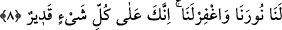

KENDİNİZİ VE AİLENİZİ
ATEŞTEN KORUYUN
6. Ey inananlar! Kendinizi ve âilenizi, yakıtı insanlar ve taşlar olan ateşten
koruyun. Onun başında, acımasız, güçlü, Allah’ın kendilerine buyurduğuna karşı
gelmeyen ve emredildiklerini yapan melekler vardır.
7. Ey kâfirler! Bugün özür dilemeyin! Siz ancak işlediklerinizin cezasını
çekeceksiniz, (denilir).
8. Ey îmân edenler! Samîmî bir tevbe ile Allah’a dönün. Umulur ki Rabbiniz sizin
kötülüklerinizi
örter.
Peygamberi
ve
Onunla
birlikte
îmân
edenleri
utandırmayacağı günde Allah sizi, içlerinden ırmaklar akan cennetlere sokar.
Onların önlerinden ve sağlarından (amellerinin) nûrları aydınlatıp gider de, “Ey
Rabbimiz! Nûrumuzu bizim için tamamla, bizi bağışla; çünkü sen her şeye
kadirsin” derler.
“Ey inananlar! Kendinizi” koruyun. Burada koruma emri muhâfaza, himâye ve sıyânet
mânâsındadır. Âyet metninde yer alan “nefis” kelimesinden maksad burada insanın
zâtıdır, yoksa nefs-i emmâresi değildir. Buna göre âyetin mânâsı “Ey inananlar nefsinizi
muhâfaza edin ve uzaklaştırın” mâsıyetleri terkederek ve itâatte bulunarak nefsinizi
koruyun, demektir.
“Ve âilenizi” Onlara nasîhat ederek, gerekli terbiyeyi vererek ve onlara öğrenmeleri
gereken şeyleri öğreterek onları koruyun. Âyet metninde yer alan “ehl” kelimesi ile
kasdedilen insanın karısı, çocuğu, erkek kardeşi, kız kardeşi, amcası, amcasının çocuğu
ve hizmetçisi gibi nafakalarını temin ettiği ve bakımı altında bulunan bütün herkestir. Bu
kelime ashâb şeklinde de tefsir edilmiştir. Âyet-i kerîme insanın yakın akrabalarından